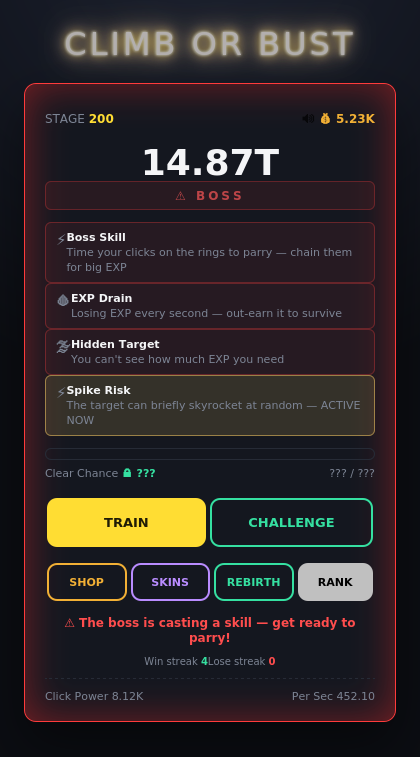
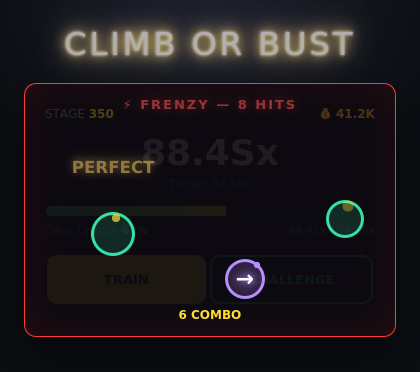
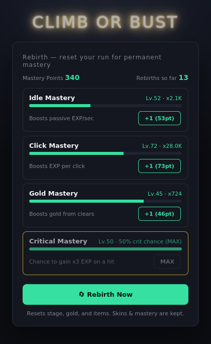
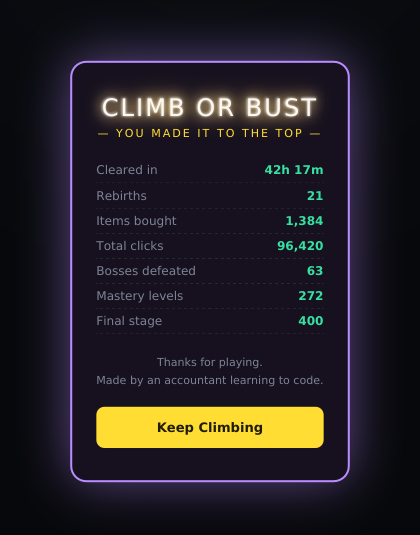

A free browser idle-clicker where the numbers fight back.
CLIMB OR BUST is a single-page idle/incremental game: click to train, gain EXP, and gamble on a
probability check to clear each stage. Unlike most idle games, there is no floor on your clear
chance — items and mastery help, but they never guarantee a win. Every 50 stages a boss shows up
with its own set of debuffs, and starting from the very first boss, you'll have to survive a
real-time rhythm-parry sequence to fight back. The climb ends at stage 400, where a full ending
sequence and run summary are waiting for whoever gets there.
CHALLENGE — attempt to clear the current stage. Your clear chance is based on how much EXP you've banked versus the stage's requirement. Fail, and you lose a chunk of your EXP.
SHOP — spend gold on permanent upgrades, temporary boosts, insurance, and a gacha box.
REBIRTH — once you've gone far enough, reset your run for permanent multipliers across four mastery trees: Idle, Click, Gold, and Critical Hit chance.

A mid-game boss fight — EXP drain, a hidden target, and a random spike all stacked at once.
Boss fights aren't passive
Every boss periodically casts a skill. The screen flashes a warning, a countdown runs, and then
targets appear that you have to hit — by click or by arrow key — right as a shrinking ring lines up.
Chain a full sequence and you get a real EXP payoff; miss too many and the boss hits back hard.
Patterns are drawn from a pool per difficulty tier, so the same boss never plays the exact same way twice.

A parry sequence mid-fight — timing matters, not just clicking.
4 Mastery TreesIdle, Click, Gold, and Critical Hit — invest across all four or you'll hit a wall.
6 Cosmetic SkinsUnlock constellation, circuit-board, block, and rainbow themes as you climb.
6 Damage FontsStage-gated floating number styles, from comic Impact to a Cadena-style neon glow.
World LeaderboardCompete on best stage reached and total time played.

Four mastery trees to balance every time you rebirth.
No pay-to-win, no fake difficulty
There's no hard floor on clear chance, so you can genuinely lose a run no matter how many items
you stack. But there's also no invisible wall you can't calculate your way around — every system
in this game was balance-tested with real simulations before shipping.

The ending screen — waiting for whoever reaches stage 400 first.